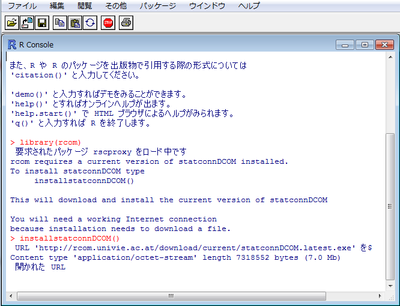

RExcel
- RExcelはExcelでRの統計処理機能を呼び出す拡張パッケージです
- 個人利用であれば無料で利用できます
- ただしExcel本体は32Bit版を使う必要があります
- (Windows本体は64Bitでも問題ありません)


R(i386)を起動して以下のように入力してEnterを押します
library (rcom)
(入力途中でTABを押すと補完されます)
installstatconnDCOM()
ネットワーク越しにインストールが始まります
保存先を作成するか促された場合は「OK」を押しまう

操作方法については『ExcelでR自由自在』を参照ください